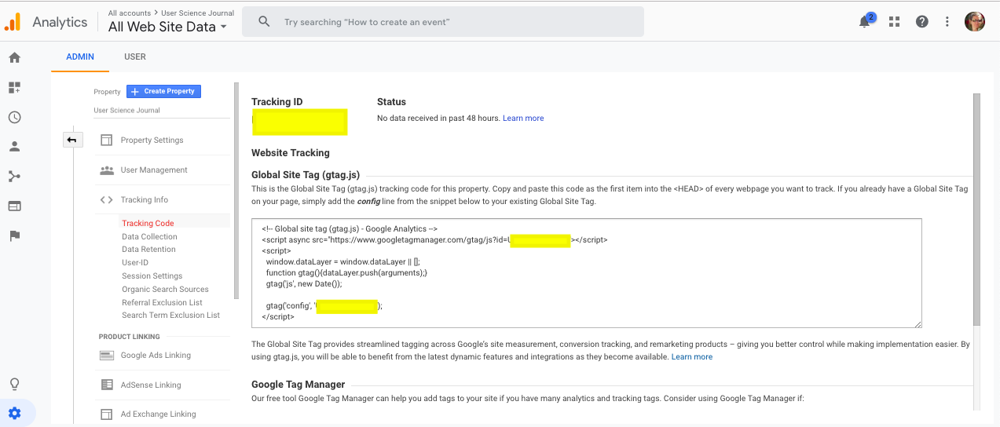

This is the answer to "How to set up a User Science Journal?"
User Science Journal Setup
You can use any online static website for your User Science Journal. These instructions will walk you through using a modified Bootstrap Template (Clean Blog) to create your own journal and add Google Analytics tracking to it. We won't officially start studying Google Analytics until the second half of the quarter, but by installing this now your Journal website can become a source of data.
Download the User Science Blog Repository
You can download the User Science Journal repository from the suwebdev account on github. There is no need to fork this repo as you don't need the history and you'll be creating a repo into your own account to push it to.

Once this zip file is downloaded, you can unzip it and copy it into your project directory. Open the the directory on your IDE and then preview in your browser. You'll be adding blog post content to the postX.html files in the repo. At a minimum you'll need to do some customization such has changing Jane Student to your name, but you're encourage to really personalize this repo. This means you can add images and CSS as you wish.
There are 4 content files in the repo to start with:
- index.html
- about.html
- post1.html
- README.md
You'll put your User Sciences notes and images in the postX.html files. When you want to create a new one, just copy and exiting one and update the active link. You can add some markdown notes to the README to describe what you're doing in this website.
You can deploy to github.io with and with your DNS name, you'll be able to share what you have learned about User Science.

Push the Downloaded Repo to Your Account
Create an new repo on github.com. You don't need to provide a license or a README.md file. Be sure it's Public.

Github.com will then give you instruction for pushing your local directory up to the repo. These are the instructions you need to follow:
git init
git commit -m "first commit"
git remote add origin git@github.com:rebeccapeltz/user-science-journal.git
git push -u origin master
Once your repo is in github, you can set up github.io service and then you'll share the link to a postX.html file each week for your home assignment.
The link to the user science journal just created is: https://www.beckypeltz.me/user-science-journal/
Add Google Analytics to Each Page in the Journal
Get a Google account if you don't already have one.
Start using Google Analytics from the marketing platform: https://marketingplatform.google.com/about/analytics/
The first time you made need to press on the Start for Free button.

Once signed in, you'll go to the home page. The home page below is for an account that is already tracking properties, so it may not look exactly like this.

Get a Google Analytics Tracking Number for Your Site
Click on the Admin button (lower left with Gear icon).
Click on the Create Account button.

Add information about the website your want to collect information on. Notice that I have chose https:// because I indicated that I was using https when I set up gh-pages on github.

At the bottom of the Create Property form click on Get Tracking Code. This will create the property and take you to a screen where you can see your GA Tracking code. You'll first have to accept terms of service.

The Tracking Code is a string that links your web page to google analytics data. The Tracking Code is added to the page by inserting some JavaScript on to each page your want tracked. You'll copy the code from the Tracking Code page into your butter and past it into the web page as the first item under the <HEAD> tag. The tracking code is in the positions labeled as yellow rectangles below.

You can see what this looks like in code below. You'll need to add this to every web page that you want to get tracked by GA.

Add Demographics to Data Collection
Click on the enable button to enable demographic tracking. The learn more button takes you to a page where you are informed that you must add language to your privacy policy in order to collect this data. We have added this language to the about page in the User Science Journal repo.

Once enabled you'll see the following confirmation.

Look at Home Page on Google Analytics
Now when you go to your Home page on Google Analytics, it will looks like this:

Reference for Setup: https://support.google.com/analytics/answer/1008015?hl=en